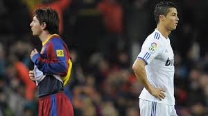

La rivalité

Ronaldo fait ses début en professionnel au Sporting club de Portugal de 2002 à 2003
puis rejoint Manchester United. Il y reste 6 ans (2003-2009) et il commence à s'écrire
un nom dans le football.
Pendant ce temps Messi commence à jouer une saison avec l'équipe C du FC Barcelone
malgrès son très jeune âge, 16ans en 2003. L'année d'après, il alterne entre l'équipe
B et l'équipe première du club.
Les deux joueurs épatent le monde du football, ce n'est que le début d'une rivalité qui dure
toujours aujourd'hui.
En 2009, Cristiano Ronaldo rejoint le Real Madrid et rejoins le même championnat de Messi. Deux fois
par saison, Messi et Ronaldo se retrouver face à face dans "El Clasico", de quoi donner encore plus
d'engouement au deux clubs.
De 2007 à 2017, les deux joueurs dominent le football, notamment au classement du ballon d'or,
trophée qui récompense le meilleur joueur du monde de la saison.
- 2007 : Ronaldo 2éme , Messi 3éme
- 2008 : Ronaldo 1er , Messi 2éme
- 2009 : Messi 1er , Ronaldo 2éme
- 2010 : Messi 1er , Ronaldo 6éme
- 2011 : Messi 1er , Ronaldo 2éme
- 2012 : Messi 1er , Ronaldo 2éme
- 2013 : Ronaldo 1er , Messi 2éme
- 2014 : Ronaldo 1er , Messi 2éme
- 2015 : Messi 1er , Ronaldo 2éme
- 2016 : Ronaldo 1er , Messi 2éme
- 2017 : Ronaldo 1er , Messi 2éme